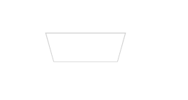

2020/07/26
Author: guoqzuo
css利用perspective画梯形
今天看小伙伴的代码，发现有一个梯形的实现居然是css写的，我以为需要UI提供icon。这里用到了 perspective 远景这个参数

/* <div class="tx"></div> */
.tx {
width: 100px;
height: 40px;
margin: 100px;
border: 1px solid #ccc;
transform: perspective(2em) rotateX(-10deg);
}CSS 属性 perspective指定了观察者与 z=0 平面的距离，使具有三维位置变换的元素产生透视效果。 z>0 的三维元素比正常大，而 z<0 时则比正常小，大小程度由该属性的值决定。
参考: